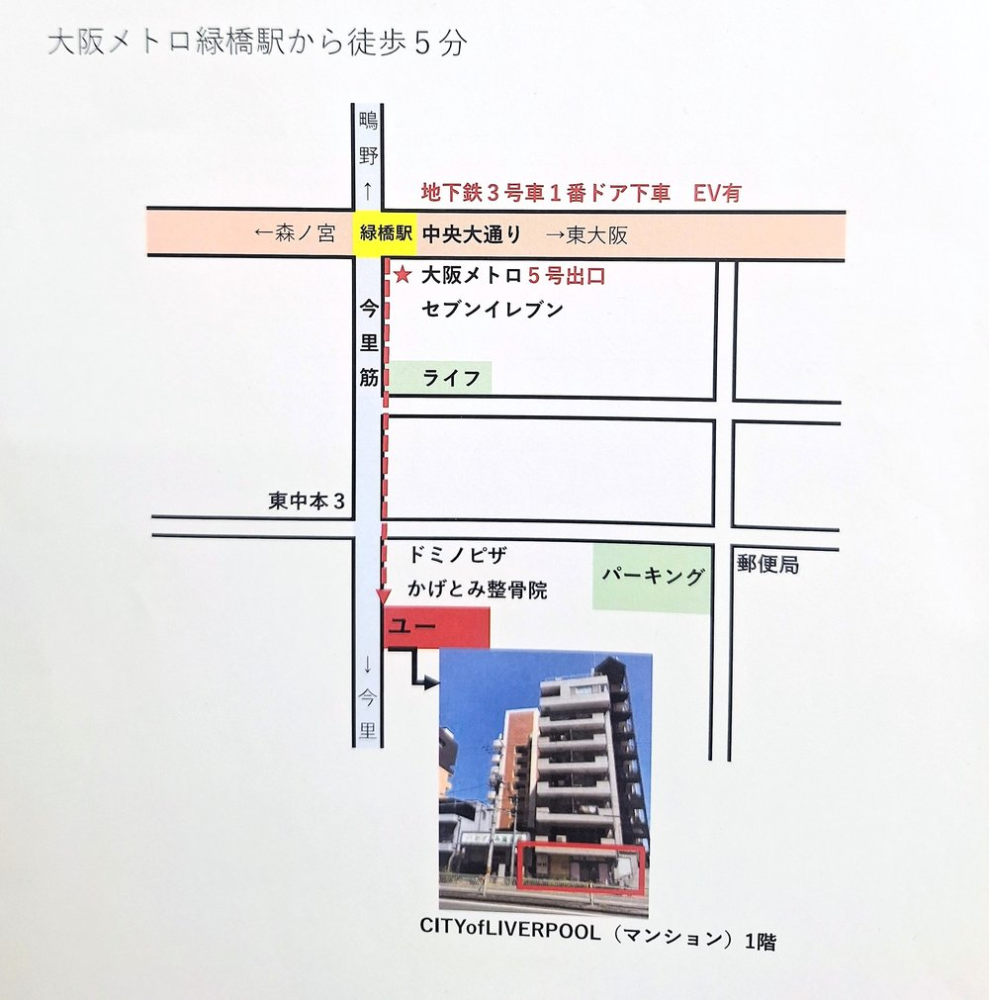

ACCESS
アクセスはこちら
大阪メトロ中央線・今里筋線「緑橋駅」5号出口から徒歩5分。今里筋沿いの「CITY of LIVERPOOL」1階です。東成区・城東区・生野区など近隣エリアからも通いやすい立地です。お車でお越しの際も、お気軽にお問い合わせください。
所在地・お問い合わせ先
所在地大阪市東成区東中本三丁目1番30号
電話番号06-6224-3252
受付時間9:30〜17:00(土日・祝日、お盆、GW休み)
駐車場の有無や詳しい道順について気になる方は、お電話またはお問い合わせフォームからお気軽にお尋ねください。
見学・お問合せはこちら